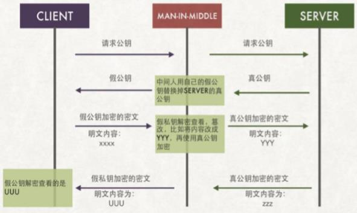

墨菲定律
一种心理学效应，是由爱德华·墨菲（Edward A. Murphy）提出的。
原话：如果有两种或两种以上的方式去做某件事情，而其中一种选择方式将导致灾难，则必定有人会做出这种选择
主要内容：
任何事都没有表面看起来那么简单
所有的事都会比你预计的时间长
会出错的事总会出错
如果你担心某种情况发生，那么它就更有可能发生
安全机制
防护的目标
保密性 Confidentiality
完整性 Integrity
可用性 Usability
可控制性 Controlability
不可否认性 Non-repudiation
安全防护环节
物理安全：各种设备主机、机房环境
系统安全：主机或设备的操作系统
应用安全：各种网络服务、应用程序
网络安全：对网络访问的控制、防火墙规则
数据安全：信息的备份与恢复、加密解密
管理安全：各种保障性的规范、流程、方法
安全攻击的手段：STRIDE
假冒Spoofing
篡改Tampering
否认Repudiation
信息泄露Information Disclosure
拒绝服务Denial of Service
提升权限Elevation of Privilege
安全算法
常用安全技术
认证
授权
审计
安全通信
对称加密
加密解密共用一套密匙
DES：Data Encryption Standard，56bits
3DES：
AES：Advanced Encryption Standard
Blowfish，Twofish
IDEA，RC6，CAST5
特点：
加密、解密使用同一密钥，效率高
将原始数据分割成固定大小的块，逐一加密
缺点：
密钥无法分发
数据来源无法确定是发送方发送
密钥过多
非对称加密
公钥加密
加密和解密使用不同一个密钥，密钥成对出现
公钥：公开给所有人；public key
私钥：只在自身留存，secret key
特点，用公钥加密的数据，只能使用与之配对的私钥解密，反之亦然
常见用途
身份认证（数字签名）：主要用于认证接收方确认发送方的身份
密钥交换：发送方用对方的公钥加密一个对称密钥，并发送给对方
数据加密：可用于短小的数据加密，如密钥
常见算法：
RSA，既能实现数字签名，又能用户数据加密
DSA，只能用于数字签名，不能用于数据加密
ELGamal，商业加密
数字签名
发送者
生成公钥/密钥对：P和S
公开公钥P，保密密钥S
使用密钥S来加密消息M
发送给接收者S(M)
接收者
使用发送者的公钥来解密M=P(S(M))
单向散列
只能解密，不能解密，提取数据指纹
特性：
意长度输入
固定长度输出
若修改数据，指纹也会改变（“不会产生冲突”）
无法从指纹中重新生成数据（“单向”）
功能：数据完整性
常见算法
md5，128bit
md5sum -c，检查md5
sha
sha1，160bit
sha224
sha256
sha384
sha512
常用工具
md5sum | sha1sum [ --check ] file
openssl、gpg
rpm -V
密钥交换协议
密钥交换：IKE
公钥加密
DH（Deffie-Hellman）：生成会话密钥
DH：
A: g,p 协商生成公开的整数g, 大素数p
B: g,p
A:生成隐私数据 :a (a<p )，计算得出 g^a%p，发送给B
B:生成隐私数据 :b,计算得出 g^b%p，发送给A
A:计算得出 [(gb%p)a] %p = g^ab%p，生成为密钥
B:计算得出 [(ga%p)b] %p = g^ab%p，生成为密钥
应用程序：RPM
文件完整性的两种实施方式
被安装的文件
MD5单向散列
rpm --verify package_name (or -V)
发行的软件包文件
GPG公钥签名
rpm --import /etc/pki/rpm-gpg/RPM-GPG-KEY-redhat*
rpm --checksig pakage_file_name (or -K)
使用gpg实现对称加密
对称加密file文件
gpg -c file
ls file.gpg
在另一台主机上解密file
gpg -o file -d file.gpg
使用gpg工具实现公钥加密
在hostB主机上用公钥加密，在hostA主机上解密
在hostA主机上生成公钥/私钥对
gpg --gen-key
在hostA主机上查看公钥
gpg --list-keys
在hostA主机上导出公钥到wang.pubkey
gpg -a --export -o wang.pubkey
从hostA主机上复制公钥文件到需加密的B主机上
scp wang.pubkey hostB:
在需加密数据的hostB主机上生成公钥/私钥对
gpg --list-keys
gpg --gen-key
在hostB主机上导入公钥
gpg --import wang.pubkey
gpg --list-keys
用从hostA主机导入的公钥，加密hostB主机的文件file,生成file.gpg
gpg -e -r wang file
-e 加密
-r 指定接受信息的人
file file.gpg
复制加密文件到hostA主机
scp fstab.gpg hostA:
在hostA主机解密文件
gpg -d file.gpg
gpg -o file -d file.gpg
删除公钥和私钥
gpg --delete-keys wang
gpg --delete-secret-keys wang
中间人攻击

CA和证书
PKI: Public Key Infrastructure
签证机构：CA（Certificate Authority）
注册机构：RA
证书吊销列表：CRL
证书存取库：
X.509：定义了证书的结构以及认证协议标准
版本号
序列号
签名算法
颁发者
有效期限
主体名称
主体公钥
CRL分发点
扩展信息
发行者签名
证书获取
证书类型：
证书授权机构的证书
服务器
用户证书
获取证书两种方法：
使用证书授权机构
生成证书请求（csr）
将证书请求csr发送给CA
CA签名颁发证书
自签名的证书
自已签发自己的公钥
再次申请CA证书，申请证书填写的信息与根CA证书信息不一致,解决方法
自签名证书
方法一：生成一个自签名的根证书
openssl req -new -x509 -newkey rsa:1024 -out server.crt
方法二：
openssl genrsa -out server.key 1024 -- 生成私钥
openssl req -new -x509 -key server.key -out server.crt [-subj "/CN=www.magedu.net"] --私钥生成自签名证书
方法三：
自己扮演ca机构给自己签名
openssl genrsa -out server.key 1024 ---- 生成私钥
openssl req -new -key server.key -out server.csr --根据私钥生成请求文件
openssl x509 -req -in server.csr -out server.crt --- 根据请求文件生成证书
创建CA和申请证书
创建私有CA：
openssl的配置文件：/etc/pki/tls/openssl.cnf
三种策略：匹配、支持和可选
匹配指要求申请填写的信息跟CA设置信息必须一致
支持指必须填写这项申请信息
可选指可有可无
1、创建所需要的文件
touch /etc/pki/CA/index.txt 生成证书索引数据库文件
echo 01 > /etc/pki/CA/serial 指定第一个颁发证书的序列号
注意：如果没有创建/etc/pki/CA/index.txt和/etc/pki/CA/serial文件，在颁发证书时会出错
2、 CA自签证书
生成私钥
cd /etc/pki/CA/
(umask 066; openssl genrsa -out /etc/pki/CA/private/ca.pem 2048)
生成自签名证书
openssl req -new -x509 –key /etc/pki/CA/private/ca.pem -days 7300 -out /etc/pki/CA/ca.crt
-new: 生成新证书签署请求
-x509: 专用于CA生成自签证书
-key: 生成请求时用到的私钥文件
-days n：证书的有效期限
-out /PATH/TO/SOMECERTFILE: 证书的保存路径
注意：创建时，要填写必要的信息：国家、省、公司名等
3、生成私钥以及证书申请
在需要使用证书的主机生成证书请求，给web服务器生成私钥
(umask 066; openssl genrsa -out /etc/pki/tls/private/test.key 2048)
生成证书申请文件
openssl req -new -key /etc/pki/tls/private/test.key -days 365 -out /etc/pki/tls/test.csr (-day 365可以省略不写，因为证书有效期由颁发机构指定)
注意：申请CA证书填写的内容中国家、省、公司名必须与服务器端自签名证书中的一致
把证书申请传递到服务器端
将证书请求文件传输给CA
scp /etc/pki/tls/test.csr x.x.x.x:/etc/pki/CA (x.x.x.x为服务器ip地址)
4、CA签署证书，并将证书颁发给请求者
openssl ca -in /etc/pki/CA/test.csr –out /etc/pki/CA/certs/test.crt -days 365
或
openssl x509 -req -CA ca.crt -CAKey ca.pem -CAcreateserial -in test.csr -out test.crt
注意：默认国家，省，公司名称三项必须和CA一致
5.查看证书中的信息：
openssl x509 -in /PATH/FROM/CERT_FILE -noout -text|issuer|subject|serial|dates
openssl ca -status SERIAL 查看指定编号的证书状态
6、吊销证书
在客户端获取要吊销的证书的serial
openssl x509 -in /PATH/FROM/CERT_FILE -noout -serial -subject
在CA上，根据客户提交的serial与subject信息，对比检验是否与index.txt文件中的信息一致，
吊销证书：
openssl ca -revoke /etc/pki/CA/newcerts/SERIAL.pem
指定第一个吊销证书的编号,注意：第一次更新证书吊销列表前，才需要执行
echo 01 > /etc/pki/CA/crlnumber
更新证书吊销列表
openssl ca -gencrl -out /etc/pki/CA/crl.pem
查看crl文件：
openssl crl -in /etc/pki/CA/crl.pem -noout -text
CA公钥传递过程
A和B通讯,寻找可信的权威机构
A把自己的公钥发送给CA，CA拥有自己的公钥和私钥
通过审核后，CA用自己的私钥对A的公钥做数字签名(除了数字签名还包括CA信息，A的信息、有效期)，这些信息就是所谓的CA证书，CA把此证书颁发给A
此时，假设B已经获取CA的公钥信息，那么通过解密证书文件，即可获取A的公钥信息
以此类推，A通过CA证书获取B的公钥信息最权威的CA证书颁发机构根CA(顶层CA)有自己的公钥和私钥；子CA通过向根CA申请获取证书，在上述过程中，假设B获得CA公钥信息，此时A和B获取的CA公钥为根CA颁发的公钥，此公钥是必须可信的，因此确保了CA公钥的可信度
在安装windows系统时，知名机构的公钥已经被安装在系统中，即获取了根CA的公钥，那么子CA颁发的证书也就确保了可信度
安全协议
SSL：Secure Socket Layer，TLS: Transport Layer Security
1995：SSL 2.0 Netscape
1996：SSL 3.0
1999：TLS 1.0
2006：TLS 1.1 IETF(Internet工程任务组) RFC 4346
2008：TLS 1.2 当前使用
2015：TLS 1.3
功能：机密性，认证，完整性，重放保护
重放：不解密数据，把数据截取下来重新发送该数据，利用截取的数据假冒数据发送方把数据发送给接收方以获取其信息
两阶段协议，分为握手阶段和应用阶段
握手阶段(协商阶段):客户端和服务器端认证对方身份（依赖于PKI体系，利用数字证书进行身份认证），并协商通信中使用的安全参数、密码套件以及主密钥。后续通信使用的所有密钥都是通过MasterSecret生成。
应用阶段:在握手阶段完成后进入，在应用阶段通信双方使用握手阶段协商好的密钥进行安全通信
https工作过程
HTTPS 协议：就是“HTTP 协议”和“SSL/TLS 协议”的组合。
HTTP over SSL”或“HTTP over TLS”，对http协议的文本数据进行加密处理后，成为二进制形式传输
https工作过程：
1、客户端client向服务端server发出请求，要登录https://www.baidu.com
2、服务端把已经拥有的证书发送给客户端，该证书内容包括服务端自己的公钥、ca的私钥签名、网站信息、证书有效期；而且该证书已经用数字签名(即使用CA的私钥加密)保证其来源的可靠性
3、客户端信任CA，使用已经获取的CA的公钥进行解密，获取证书中服务端的公钥，此公钥确定是可靠可信的
4、客户端生成随机字符串session key(即会话密钥，也叫对称密钥)，使用服务端的公钥加密随机字符串key，传递给服务端
5、服务器使用自己的私钥解密公钥加密的数据，获取key
6、随后，通讯双方即可使用key加密数据进行通讯
openssl
OpenSSL：开源项目
三个组件：
openssl：多用途的命令行工具，包openssl
libcrypto：加密算法库，包openssl-libs
libssl：加密模块应用库，实现了ssl及tls，包nss
openssl命令：
两种运行模式：交互模式和批处理模式
openssl version：程序版本号
标准命令、消息摘要命令、加密命令
标准命令：enc, ca, req, ...
对称加密：
工具：openssl enc, gpg
算法：3des, aes, blowfish, twofish
公钥加密：
算法：RSA, ELGamal
工具：gpg, openssl rsautl（man rsautl）
数字签名：
算法：RSA, DSA, ELGamal
密钥交换：
算法：dh
DSA：Digital Signature Algorithm
DSS：Digital Signature Standard
RSA：
enc命令：
帮助：man enc
加密：
openssl enc -e -des3 -a -salt -in testfile -out testfile.cipher
解密：
openssl enc -d -des3 -a -salt –in testfile.cipher -out testfile
单向加密：
工具：md5sum, sha1sum, sha224sum,sha256sum…
openssl dgst
dgst命令：
摘要算法
帮助：man dgst
openssl dgst -md5 [-hex默认] /PATH/SOMEFILE
openssl dgst -md5 testfile
md5sum /PATH/TO/SOMEFILE
MAC: Message Authentication Code
单向加密的一种延伸应用，用于实现网络通信中保证所传输数据的完整性机制
CBC-MAC
HMAC：使用md5或sha1算法
生成用户密码：
帮助：man sslpasswd
openssl passwd -1 -salt SALT(最多8位)
openssl passwd -1 –salt centos
例：
输入密码，生成加密的随机字符，由于加的盐不同，即使密码相同，生成的字符串也不相同
[root@centos7-1 data]#openssl passwd -1
Password:
Verifying - Password:
$1$6xpH2Wqj$i7MsvvvrzmAZrVG1tfd8K1
[root@centos7-1 data]#openssl passwd -1
Password:
Verifying - Password:
$1$2rhWY8eg$PUrw57YH.8ifw9g1tFykQ0
可以通过指定盐，相同的密码会生成相同的随机字符串
[root@centos7-1 data]#openssl passwd -1 -salt 1$2rhWY8eg
Password:
$1$1rhWY8eg$Xr3rR0UjxAthuQtJwdVp/.
[root@centos7-1 data]#openssl passwd -1 -salt 1$2rhWY8eg
Password:
$1$1rhWY8eg$Xr3rR0UjxAthuQtJwdVp/.
生成随机数：
帮助：man sslrand
openssl rand -base64|-hex NUM
NUM: 表示字节数，使用-hex，每个字符为十六进制，相当于4位二进制，出现的字符数为NUM*2
例：
base64编码详解：
openssl rand -base64 N 生成N字节的随机数
基于base64生成的随机数，64为2^6
一个字节占8位，如果N*8能够被6整除，那么生成的随机数后不带=号(当随机数不够时，会使用=号占位)，如果N*8不能被6整除，则生成的随机数后会有=号补全
[root@centos7-1 data]#openssl rand -base64 3 3*8=24，能够被6整除
1hBC
[root@centos7-1 data]#openssl rand -base64 5 5*8=40，不能够被6整除
l6y7GxA=
base64编码：
abc，一个字符占8位，三个字符24位，能够被6整除，因此base64编码中没有=号，
生成密钥对
man genrsa
生成私钥
openssl genrsa -out /PATH/TO/PRIVATEKEY.FILE NUM_BITS (umask 077; openssl genrsa –out test.key –des 2048)
openssl rsa -in test.key –out test2.key 将加密key解密
从私钥中提取出公钥
openssl rsa -in PRIVATEKEYFILE –pubout –out PUBLICKEYFILE
openssl rsa –in test.key –pubout –out test.key.pub
随机数生成器
伪随机数字
键盘和鼠标，块设备中断
/dev/random：仅从熵池返回随机数；随机数用尽，阻塞
/dev/urandom：从熵池返回随机数；随机数用尽，会利用软件生成伪随机 数,
Openssh
相关包：
openssh
openssh-clients
openssh-server
工具：
基于C/S结构
Client: ssh, scp, sftp，slogin
Windows客户端：
xshell, putty, securecrt, sshsecureshellclient
Server: sshd
SSH
ssh: secure shell, protocol, 22/tcp, 安全的远程登录
具体的软件实现：
OpenSSH: ssh协议的开源实现，CentOS默认安装
dropbear：另一个开源实现
SSH协议版本
v1: 基于CRC-32做MAC，不安全；man-in-middle
v2：双方主机协议选择安全的MAC方式
基于DH算法做密钥交换，基于RSA或DSA实现身份认证
两种方式的用户登录认证：
基于password
基于key
ssh, 配置文件：/etc/ssh/ssh_config
Host PATTERN
StrictHostKeyChecking no 首次登录不显示检查提示
格式：ssh [user@]host [COMMAND]
ssh [-l user] host [COMMAND]
常见选项
-p port：远程服务器监听的端口
-b：指定连接的源IP
-v：调试模式
-C：压缩方式
-X：支持x11转发
-t：强制伪tty分配
多台设备通过逐个跳转，远程连接到远端主机,最后一个终端可以不用加-t选项
ssh -t remoteserver1 ssh -t remoteserver2 ssh remoteserver3
允许实现对远程系统经验证地加密安全访问
当用户远程连接ssh服务器时，会复制ssh服务器/etc/ssh/ssh_host*\key.pub（CentOS7默认是ssh_host_ecdsa_key.pub）文件中的公钥到客户机的~./ssh/know_hosts中。
下次连接时，会自动匹配相应私钥，不能匹配，将拒绝连接
自动登陆root用户：
编辑/etc/gdm/custom.conf
AutomaticLoginEnable=true
AutomaticLogin=root
ssh服务登录验证
ssh服务登录验证方式：
用户/口令
基于密钥
基于用户和口令登录验证
1、客户端发起ssh请求，服务器会把自己的公钥发送给用户
2、用户会根据服务器发来的公钥对密码进行加密
3、加密后的信息回传给服务器，服务器用自己的私钥解密，如果密码正确，则用户登录成功
基于密钥的登录方式
1、首先在客户端生成一对密钥（ssh-keygen）
2、并将客户端的公钥ssh-copy-id 拷贝到服务端
3、当客户端再次发送一个连接请求，包括ip、用户名
4、服务端得到客户端的请求后，会到authorized_keys中查找，如果有响应的IP和用户，就会随机生成一个字符串，例如：acdf
5、服务端将使用客户端拷贝过来的公钥进行加密，然后发送给客户端
6、得到服务端发来的消息后，客户端会使用私钥进行解密，然后将解密后的字符串发送给服务端
7、服务端接受到客户端发来的字符串后，跟之前的字符串进行对比，如果一致，就允许免密码登录
ssh命令实现基于key认证
基于密钥的认证：
(1) 在客户端生成密钥对
ssh-keygen -t rsa [-P ''] [-f "~/.ssh/id_rsa"]
ssh-keygen -t rsa
(2) 把公钥文件传输至远程服务器对应用户的家目录
ssh-copy-id [-i [identity_file]] [user@]host
ssh-copy-id 192.168.32.128(目标ip地址)
(3) 在SecureCRT或Xshell实现基于key验证
在SecureCRT工具—>创建公钥—>生成Identity.pub文件
转化为openssh兼容格式（适合SecureCRT，Xshell不需要转化格式），并复制到需登录主机上相应文件authorized_keys中,注意权限必须为600，在需登录的ssh 主机上执行：
ssh-keygen -i -f Identity.pub >> .ssh/authorized_keys
(4)重设私钥口令：
ssh-keygen –p
(5)验证代理（authentication agent）保密解密后的密钥
这样口令就只需要输入一次
在GNOME中，代理被自动提供给root用户
否则运行ssh-agent bash
(7)钥匙通过命令添加给代理
ssh-add
排错总结：
ssh是基于key连接通讯双方，如果有主机通过冒充ip地址以及mac地址连接某主机是行不通的，会有警告信息出现，因此基于key的验证方法相对更为安全
hostA向hostB发起连接请求，
第一次通讯时，hostA把hostB的公钥/etc/ssh/ssh_host_rsa_key.pub复制到自己主机/root/.ssh/know_hosts文件下
主机hostB用自己的私钥进行签名加密数据发送给主机hostA，而此时主机hostA已经存有hostB的公钥，如果可以解密，说明hostB是原来的设备，如果无法解密，则说明是另外的设备
注意：如果hostB的私钥被窃取，那么获取hostB私钥的设备可以冒充hostB与之前和hostB验证过的设备通信，因此对于私钥要做好保密措施
复制私钥到其他主机时，注意文件的用户、组以及权限问题
如果使用新设备代替旧设备，而新设备的地址改为旧地址的ip，此时，新设备的key与老设备不同，此时想通过该ip地址连接到新设备时，会提示错误信息：提示目标主机的key发生变化
解决方法：删除本机记录的旧设备的key信息，再次连接新设备即可
rm -rf /root/.ssh
1.如何确认第一次连接的目标主机为可信的目标主机
拿到目标主机的公钥信息/etc/ssh/ssh_host_rsa_key.pub与当前显示的key进行比较，如果一致，则表示目标可信
ssh 192.168.32.129
The authenticity of host '192.168.32.129 (192.168.32.129)' can't be established.
RSA key fingerprint is 3a:19:e1:94:56:01:ed:08:15:7c:1c:30:9d:93:d7:28.
Are you sure you want to continue connecting (yes/no)?
计算方法：
cp ssh_host_rsa_key.pub(目标主机公钥) /data
base64 -d /data/ssh_host_rsa_key.pub >pubkey
md5sum pubkey --- centos7中出来md5运算，还有sha256运算得出的值
3a19e1945601ed08157c1c309d93d728 pubkey
key一致，说明目标主机可信
2.批量导入公钥信息copy.sh
1 | vim ssh_push_key.sh |
注意：脚本中iplist.txt文件需要生成，可通过脚本实现
scp命令
scp命令：
scp [options] SRC... DEST/
两种方式：
scp [options] [user@]host:/sourcefile /destpath
scp [options] /sourcefile [user@]host:/destpath
常用选项：
-C 压缩数据流
-r 递归复制
-p 保持原文件的属性信息
-q 静默模式
-P PORT 指明remote host的监听的端口
缺点：当某个文件发生变化时，scp会把所有文件全部复制一遍到远程主机，这样一来就会浪费带宽
rsync命令
基于ssh和rsh服务实现高效率的远程系统之间复制文件
使用安全的shell连接做为传输方式
rsync –av /etc server1:/tmp 复制目录和目录下文件
rsync –av /etc/ server1:/tmp 只复制目录下文件
比scp更快，只复制不同的文件
选项：
-n 模拟复制过程
-v 显示详细过程
-r 递归复制目录树
-p 保留权限
-t 保留时间戳
-g 保留组信息
-o 保留所有者信息
-l 将软链接文件本身进行复制（默认）
-L 将软链接文件指向的文件复制
-a 存档，相当于–rlptgoD，但不保留ACL（-A）和SELinux属性（-X）
该命令基于增量型复制，只复制发生变化文件，未发生变化的文件不会复制，节约流量带宽,很好的解决了scp的问题
sftp命令
交互式文件传输工具
用法和传统的ftp工具相似
利用ssh服务实现安全的文件上传和下载
使用ls cd mkdir rmdir pwd get put等指令，可用？或help获取帮助信息
sftp [user@]host
sftp> help
pssh工具
pssh是一个python编写可以在多台服务器上执行命令的工具，也可实现文件复制,使用epel源安装才能使用
pssh命令默认基于key验证
选项如下：
--version：查看版本
-h：主机文件列表，内容格式”[user@]host[:port]”
-H：主机字符串，内容格式”[user@]host[:port]”
-A：手动输入密码模式
-i：每个服务器内部处理信息输出
-l：登录使用的用户名
-p：并发的线程数【可选】
-o：输出的文件目录【可选】
-e：错误输入文件【可选】
-t：TIMEOUT 超时时间设置，0无限制【可选】
-O：SSH的选项
-P：打印出服务器返回信息
-v：详细模式
示例：
1.通过pssh批量关闭seLinux
pssh -H root@192.168.23.130 -i "sed -i "s/SELINUX=enforcing/SELINUX=disabled/" /etc/selinux/config"
pssh -H root@192.168.32.120 -i setenforce 0
2.将标准错误和标准正确重定向都保存至/app目录下
pssh -H 192.168.32.130 -o /app -e /app -i "hostname"
pssh -H 192.168.32.130 -i hostname
3.当不支持ssh的key认证时，通过 -A选项，使用密码认证批量执行指令
pssh -H 192.168.32.130 -A -i hostname
4.管理多台主机时，需要输入多个密码(假设密码不一致)
pssh -H 192.168.32.130 -H 192.168.32.128 -A -i hostname
输入第一个密码，则第二个主机命令执行失败
解决方法：使用基于key验证管理多台主机(无需输入密码)
前提时主机之间已经实现基于key的验证
5.管理大批量主机时，可以把ip地址存入文本中，调用该文本即可
-h 调用主机文件列表
pssh -h iplist.txt -i hostname
6.批量创建账号
pssh -h iplist.txt -i "useradd testuser"
pssh -h iplist.txt -i "getent passwd testuser"
PSCP.PSSH命令
pscp.pssh功能是将本地文件批量复制到远程主机
pscp [-vAr] [-h hosts_file] [-H [user@]host[:port]] [-l user] [-p par] [-o outdir] [-e errdir] [-t timeout] [-O options] [-x args] [-X arg] local remote
Pscp-pssh选项
-v 显示复制过程
-r 递归复制目录
将本地curl.sh 复制到/app/目录
pscp.pssh -H 192.168.1.10 /root/test/curl.sh /app/
pscp.pssh -h host.txt /root/test/curl.sh /app/
将本地多个文件批量复制到/app/目录
pscp.pssh -H 192.168.1.10 /root/f1.sh /root/f2.sh /app/
将本地目录批量复制到/app/目录
pscp.pssh -H 192.168.1.10 -r /root/test/ /app/
PSLURP命令
pslurp功能是将远程主机的文件批量复制到本地
pslurp [-vAr] [-h hosts_file] [-H [user@]host[:port]] [-l user] [-p par][-o outdir] [-e errdir] [-t timeout] [-O options] [-x args] [-X arg] [-L localdir] remote local（本地名）
Pslurp选项
-L 指定从远程主机下载到本机的存储的目录，local是下载到本地后的名称
-r 递归复制目录
批量下载目标服务器的passwd文件至/app下，并更名为user
pslurp -H 192.168.1.10 -L /app/ /etc/passwd user
SSH端口转发
SSH端口转发
SSH会自动加密和解密所有SSH客户端与服务端之间的网络数据。但是SSH还能够将其他TCP端口的网络数据通过SSH链接来转发，并且自动提供了相应的加密及解密服务。
这一过程也被叫做“隧道”（tunneling），这是因为SSH为其他TCP链接提供了一个安全的通道来进行传输而得名。
例如，
Telnet，SMTP，LDAP这些TCP应用均能够从中得益，避免了用户名，密码以及隐私信息的明文传输。
而与此同时，如果工作环境中的防火墙限制了一些网络端口的使用，但是允许SSH的连接，也能够通过将TCP端口转发来使用SSH进行通讯
SSH 端口转发能够提供两大功能：
加密 SSH Client 端至 SSH Server 端之间的通讯数据
突破防火墙的限制完成一些之前无法建立的 TCP 连接
本地转发：
-L localport:remotehost:remotehostport sshserver
选项：
-f 后台启用
-N 不打开远程shell，处于等待状态
-g 启用网关功能
示例:
ssh –L 9527:telnetsrv:23 -Nfg sshsrv
telnet 127.0.0.1 9527
当访问本机的9527的端口时，被加密后转发到sshsrv的ssh服务，再解密被转发到telnetsrv:23
data<- ->ocalhost:9527<- ->localhost:XXXXX<- ->shsrv:22<- ->shsrv:YYYYY<- ->telnetsrv:23
远程转发
-R sshserverport:remotehost:remotehostport sshserver
示例：
ssh –R 9527:telnetsrv:23 –Nf sshsrv
让sshsrv侦听9527端口的访问，如有访问，就加密后通过ssh服务转发请求到本 机ssh客户端，再由本机解密后转发到telnetsrv:23
Data<--> sshsrv:9527 <--> sshsrv:22 <--> localhost:XXXXX <--> localhost:YYYYY<--> telnetsrv:23
动态端口转发
动态端口转发：
当用firefox访问internet时，本机的1080端口做为代理服务器，firefox的访问 请求被转发到sshserver上，由sshserver替之访问internet
ssh -D 1080 root@sshserver -fNg
在本机firefox设置代理socket proxy:127.0.0.1:1080
curl --socks5 127.0.0.1:1080 http://www.baidu.com
X 协议转发
ssh -X 192.168.32.6
让远程主机图形界面在本机显示，无论目标主机是否为图形界面，本机调用目标主机的图形界面不受影响
底层通过X协议实现通过图形程序让客户端和服务器端的通讯
对于X协议来说，客户端与服务器端与ssh协议正好相反，本机充当服务器，远程主机相当于客户端
windows通过远程连接linux，并显示图形界面，使用xmanager中的xstart软件可以实现，退出当前用户登录即可退出xstart远程连接
ssh服务器
服务器端：sshd, 配置文件: /etc/ssh/sshd_config
常用参数：
Port
ListenAddress ip
LoginGraceTime 2m
PermitRootLogin yes
StrictModes yes 检查.ssh/文件的所有者，权限等
MaxAuthTries 6
MaxSessions 10 同一个连接最大会话
PubkeyAuthentication yes
PermitEmptyPasswords no
PasswordAuthentication yes
GatewayPorts no
ClientAliveInterval：单位:秒
ClientAliveCountMax：默认3
UseDNS yes
GSSAPIAuthentication yes 提高速度可改为no
MaxStartups 未认证连接最大值，默认值10
Banner /path/file
限制可登录用户的办法：
AllowUsers user1 user2 user3
DenyUsers
AllowGroups
DenyGroups
ssh服务的最佳实践
建议使用非默认端口
禁止使用protocol version 1
限制可登录用户
设定空闲会话超时时长
利用防火墙设置ssh访问策略
仅监听特定的IP地址
基于口令认证时，使用强密码策略
tr -dc A-Za-z0-9_ < /dev/urandom | head -c 12| xargs
使用基于密钥的认证 禁止使用空密码
禁止root用户直接登录
限制ssh的访问频度和并发在线数
经常分析日志
/var/log/secure，把失败连接次数过多的ip地址扔到防火墙
awk '/Failed password for root from/{ip[$(NF-3)]++}END{for (i in ip){if(ip[i]>=3)system("iptables -A INPUT -s "i" -j REJECT")}}' /var/log/secure
dropbear
Dropbear是一个相对较小的SSH服务器和客户端。它运行在一个基于POSIX的各种平台。 Dropbear是开源软件，
Dropbear是特别有用的“嵌入”式的Linux（或其他Unix）系统，
dropbear实现安全Shell（SSH）协议版本2。
源码编译安装：
1、安装开发包组:yum groupinstall “Development tools”
2、下载dropbear-2017.75.tar.bz2
3、解压源码包tar xf dropbear-2017.75.tar.bz2
4、查看相关编译文档less INSTALL README
5、开始编译，指定配置文件安装路径
./configure --prefix=/app/dropbear --sysconfdir=/etc/dropbear --disable-zlib
6、make PROGRAMS="dropbear dbclient dropbearkey dropbearconvert scp"
7、make PROGRAMS="dropbear dbclient dropbearkey dropbearconvert scp" install
8、配置PATH路径，在任意目录下都可以执行该命令
echo PATH=/app/dropbear/bin:/app/dropbear/sbin:$PATH >> /etc/profile.d/dropbear.sh
source /etc/profile.d/dropbear.sh
9、生成运行服务所需的key
mkdir /etc/dropbear
cd /app/dropbear/bin
dropbearkey -t rsa -f /etc/dropbear/dropbear_rsa_host_key -s 2048
dropbearkey -t dss -f /etc/dropbear/dropbear_dsa_host_key
10、运行服务，指定服务端口为2222：
cd /app/dropbear/sbin
dropbear -p :2222 -F –E #前台运行
或dropbear -p :2222 #后台运行
ss -ntl 查看端口是否启动
cat /var/run/dropbear.pid 查看dropbear进程号
11、dropbear软件工具测试
cd /app/dropbear/bin
(1)使用dbclient客户端连接其他主机
source /etc/profile.d/dropbear.sh
dbclient 192.168.32.128
(2)使用scp远程复制文件
此时系统默认使用/usr/bin/下的dbclient，创建软链接指向/app/dropbear/下的dbclient
ln -s /app/dropbear/bin/dbclient /usr/bin/dbclient
12、把此服务设置为开机自启动
dropbear -p :2222 #后台运行 把dropbear设备后台运行
方法1：在/usr/lib/systemd/system/下配置service文件
方法2：写入/etc/rc.local文件
/app/dropbear/sbin/dropbear -p 2222
chmod +x /etc/rc.d/rc.local 给文件加上执行全兴
13、如果使用完毕，不再需要该工具，可以删除
删除此服务
删除etc/rc.local配置文件中的内容
杀掉dropbear进程
killall dropbear
删除配置文件
rm -rf /app/dropbear
rm -rf /etc/dropbear
删除源码文件
rm -rf dropbear-2018.76*
此时本机的scp复制文件存在问题
删除PATH变量下的路径
rm -rf /etc/profile.d/dropbear.sh
删除hash缓存，缓存中存的是/app/dropbear/sbin下的scp
hash -r 删除全部缓存
hash -d 删除某条缓存记录
AIDE
当一个入侵者进入了你的系统并且种植了木马，通常会想办法来隐蔽这个木马 （除了木马自身的一些隐蔽特性外，他会尽量给你检查系统的过程设置障碍）， 通常入侵者会修改一些文件，比如管理员通常用ps -aux来查看系统进程，那 么入侵者很可能用自己经过修改的ps程序来替换掉你系统上的ps程序，以使用 ps命令查不到正在运行的木马程序。
如果入侵者发现管理员正在运行crontab作业，也有可能替换掉crontab程序等等。
由此可以看出对于系统文件或是关键文件的检查是很必要的。
目前就系统完整性检查的工具用的比较多的有两款：
Tripwire 商业软件
AIDE 免费的但功能也很 强大的工具
AIDE(Advanced Intrusion Detection Environment)
高级入侵检测环境)是一个入侵检测工具，主要用途是检查文件的完整性，审计计算机 上的那些文件被更改过了
AIDE能够构造一个指定文件的数据库，它使用aide.conf作为其配置文件。
AIDE数据库能够保存文件的各种属性，包括：权限(permission)、索引节点序号(inode number)、 所属用户(user)、所属用户组(group)、文件大小、最后修改时间(mtime)、创建时间 (ctime)、最后访问时间(atime)、增加的大小以及连接数。
AIDE还能够使用下列算法：
sha1、md5、rmd160、tiger，以密文形式建立每个文件的校验码或散列号
这个数据库不应该保存那些经常变动的文件信息，例如：日志文件、邮件、/proc文件系统、用户起始目录以及临时目录
AIDE安装配置
yum install aide
修改配置文件
vim /etc/aide.conf (指定对哪些文件进行检测)
/test/chameleon R
/bin/ps R+a
/usr/bin/crontab R+a
/etc PERMS
!/etc/mtab #“!”表示忽略这个文件的检查
R=p+i+n+u+g+s+m+c+md5 权限+索引节点+链接数+用户+组+大小+
最后一次修改时间+创建时间+md5校验值
NORMAL = R+rmd60+sha256
初始化默认的AIDE的库：
/usr/local/bin/aide --init
生成检查数据库（建议初始数据库存放到安全的地方）
cd /var/lib/aide
mv aide.db.new.gz aide.db.gz
检测：
/usr/local/bin/aide --check
更新数据库
aide --update
TCP_Wrappers
作者：Wieste Venema，IBM，Google
工作在第四层（传输层）的TCP协议
对有状态连接的特定服务进行安全检测并实现访问控制
以库文件形式实现
某进程是否接受libwrap的控制取决于发起此进程的程序在编译时是否针对libwrap进行编译的
判断服务程序是否能够由tcp_wrapper进行访问控制的方法：
ldd /PATH/TO/PROGRAM|grep libwrap.so
strings PATH/TO/PROGRAM|grep libwrap.so
注意：ldd，strings后要跟命令的绝对路径
配置文件：/etc/hosts.allow, /etc/hosts.deny
帮助参考：man 5 hosts_access，man 5 hosts_options
检查顺序：hosts.allow，hosts.deny（默认允许）
注意：一旦前面规则匹配，直接生效，将不再继续
基本语法:
daemon_list@host: client_list [ :options :option… ]
Daemon_list@host格式
单个应用程序的二进制文件名，而非服务名，例如vsftpd
以逗号或空格分隔的应用程序文件名列表，如:sshd,vsftpd
ALL表示所有接受tcp_wrapper控制的服务程序
主机有多个IP，可用@hostIP来实现控制
如：in.telnetd@192.168.0.254
客户端Client_list格式
以逗号或空格分隔的客户端列表
基于IP地址：192.168.10.1 192.168.1.
基于主机名：www.magedu.com .magedu.com 较少用
基于网络/掩码：192.168.0.0/255.255.255.0
基于net/prefixlen: 192.168.1.0/24（CentOS6不支持此写法，只能centos7使用）
基于网络组（NIS 域）：@mynetwork
内置ACL：ALL，LOCAL，KNOWN，UNKNOWN，PARANOID
EXCEPT用法：
示例：
vsftpd: 172.16. EXCEPT 172.16.100.0/24 EXCEPT 172.16.100.1
1.只允许192.168.1.0/24的主机访问sshd
/etc/hosts.allow
sshd: 192.168.1.
/etc/hosts.deny
sshd :ALL
2.只允许192.168.1.0/24的主机访问telnet和vsftpd服务
/etc/hosts.allow
vsftpd,in.telnetd: 192.168.1.
/etc/host.deny
vsftpd,in.telnetd: ALL
帮助：man 5 hosts_options
deny 主要用在/etc/hosts.allow定义“拒绝”规则
如：vsftpd: 172.16. :deny
allow 主要用在/etc/hosts.deny定义“允许”规则
如：vsftpd:172.16. :allow
spawn 启动一个外部程序完成执行的操作
twist 实际动作是拒绝访问,使用指定的操作替换当前服务,标准I/O和ERROR发送到客户端,默认至/dev/null
测试工具：
tcpdmatch [-d] daemon[@host] client
-d 测试当前目录下的hosts.allow和hosts.deny
示例：
当ssh登录所有主机时，执行记录日志动作
sshd: ALL :spawn echo "$(date +%%F) login attempt from %c to %s,%d" >>/var/log/sshd.log
说明：
在/etc/hosts.allow中添加，允许登录，并记录日志
在/etc/hosts.deny中添加，拒绝登录，并记录日志
%c 客户端信息
%s 服务器端信息
%d 服务名
%p 守护进程的PID
%% 表示%
拒绝172.16.0.0网段访问，并提示connection prohibited
vsftpd: 172.16. :twist /bin/echo "connection prohibited"
PAM认证机制
PAM:Pluggable Authentication Modules
认证库：文本文件，MySQL，NIS，LDAP等
Sun公司于1995 年开发的一种与认证相关的通用框架机制
PAM是关注如何为服务验证用户的API，通过提供一些动态链接库和一套统一的API，将系统提供的服务和该服务的认证方式分开
使得系统管理员可以灵活地根据需要给不同的服务配置不同的认证方式而无需更改服务程序
一种认证框架，自身不做认证
它提供了对所有服务进行认证的中央机制，适用于login，远程登录（telnet,rlogin,fsh,ftp,点对点协议（PPP）），su等应用程序中。
系统管理员通过PAM配置文件来制定不同应用程序的不同认证策略
应用程序开发者通过在服务程序中使用PAM API(pam_xxxx())来实现对认证方法的调用
而PAM服务模块的开发者则利用PAM SPI来编写模块（主要调用函数pam_sm_xxxx()供PAM接口库调用，将不同的认证机制加入到系统中
PAM接口库（libpam）则读取配置文件，将应用程序和相应的PAM服务模块联系起来
PAM相关文件
模块文件目录：/lib64/security/*.so
环境相关的设置：/etc/security/
主配置文件:/etc/pam.conf，默认不存在
为每种应用模块提供一个专用的配置文件：/etc/pam.d/APP_NA
注意：如/etc/pam.d存在，/etc/pam.conf将失效
PAM认证原理
PAM认证一般遵循这样的顺序：Service(服务)→PAM(配置文件)→pam_*.so
PAM认证首先要确定那一项服务，然后加载相应的PAM的配置文件(位于/etc/pam.d下)，最后调用认证文件(位于/lib/security下)进行安全认证
PAM认证过程：
1.使用者执行/usr/bin/passwd 程序，并输入密码
2.passwd开始调用PAM模块，PAM模块会搜寻passwd程序的PAM相关设置文件，这个设置文件一般是在/etc/pam.d/里边的与程序同名的文件，即PAM会搜寻/etc/pam.d/passwd此设置文件
3.经由/etc/pam.d/passwd设定文件的数据，取用PAM所提供的相关模块来进行验证
4.将验证结果回传给passwd这个程序，而passwd这个程序会根据PAM回传的结果决定下一个动作（重新输入密码或者通过验证）
PAM配置文件与模块
通用配置文件/etc/pam.conf格式
application type control module-path arguments
专用配置文件/etc/pam.d/* 格式
type control module-path arguments
说明：
服务名（application）
telnet、login、ftp等，服务名字“OTHER”代表所有没有在该文件中明确配置的其它服务
模块类型（module-type）
control PAM库该如何处理与该服务相关的PAM模块的成功或失败情况
module-path 用来指明本模块对应的程序文件的路径名
Arguments 用来传递给该模块的参数
例：
cat /etc/pam.d/login
1 | #%PAM-1.0 |
/etc/pam.d/* 格式
模块类型（module-type）
Auth 账号的认证和授权
Account 与账号管理相关的非认证类的功能，如：用来限制/允许用户对某个服务的访问时间，当前有效的系统资源(最多可以有多少个用户)，限制用 户的位置(例如：root用户只能从控制台登录)
Password 用户修改密码时密码复杂度检查机制等功能
Session 用户获取到服务之前或使用服务完成之后需要进行一些附加的操作， 如：记录打开/关闭数据的信息，监视目录等
-type 表示因为缺失而不能加载的模块将不记录到系统日志,对于那些不总是 安装在系统上的模块有用
Control: PAM库如何处理与该服务相关的PAM模块成功或失败情况
两种方式实现： 简单和复杂
1.简单方式实现：一个关健词实现
required ：一票否决，表示本模块必须返回成功才能通过认证，但是如果该模块返回失败，失败结果也不会立即通知用户，而是要等到同一type中的所有模块全部执行完毕再将失败结果返回给应用程序，即为必要条件
requisite ：一票否决，该模块必须返回成功才能通过认证，但是一旦该模块返回失败，将不再执行同一type内的任何模块，而是直接将控制权返回给应用程 序。是一个必要条件
sufficient ：一票通过，表明本模块返回成功则通过身份认证的要求，不必再执行同一type内的其它模块，但如果本模块返回失败可忽略，即为充分条件
optional：表明本模块是可选的，它的成功与否不会对身份认证起关键作用，其返回值一般被忽略
include： 调用其他的配置文件中定义的配置信息
2.复杂详细实现：使用一个或多个“status=action”
[status1=action1 status2=action …] Status:检查结果的返回状态
Action:采取行为 ok，done，die，bad，ignore，reset
ok 模块通过，继续检查
done 模块通过，返回最后结果给应用
bad 结果失败，继续检查
die 结果失败，返回失败结果给应用
ignore 结果忽略，不影响最后结果
reset 忽略已经得到的结果
module-path: 模块路径
相对路径：
/lib64/security目录下的模块可使用相对路径 如：pam_shells.so、pam_limits.so
绝对路径：
模块通过读取配置文件完成用户对系统资源的使用控制
/etc/security/*.conf
注意：修改PAM配置文件将马上生效
建议：编辑pam规则时，保持至少打开一个root会话，以防止root身份验证错误
Arguments 用来传递给该模块的参数
PAM模块示例
模块：pam_shells
功能：检查有效shell
帮助：man pam_shells
示例：不允许使用/bin/csh的用户本地登录
vim /etc/pam.d/login
auth required pam_shells.so
vim /etc/shells
去掉 /bin/csh
useradd –s /bin/csh test
test将不可登录
tail /var/log/secure
模块：pam_securetty.so
功能：只允许root用户在/etc/securetty列出的安全终端上登陆
示例：允许root在telnet登陆
vi /etc/pam.d/remote
#auth required pam_securetty.so #将这一行加上注释
或者
/etc/securetty文件中加入
pts/0,pts/1…pts/n
模块：pam_nologin.so
功能：
如果/etc/nologin文件存在,将导致非root用户不能登陆
如果用户shell是/sbin/nologin 时，当该用户登陆时，会显示/etc/nologin文件内容，并拒绝登陆
模块：pam_limits.so
功能：在用户级别实现对其可使用的资源的限制，
例如：可打开的文件数量， 可运行的进程数量，可用内存空间
修改限制的实现方式：
(1) ulimit命令，立即生效，但无法保存
-n 每个进程最多的打开的文件描述符个数
-u 最大用户进程数
-S 使用 soft（软）资源限制
-H 使用 hard（硬）资源限制
(2) 配置文件：
/etc/security/limits.conf, /etc/security/limits.d/*.conf
配置文件：每行一个定义；
<domain> <type> <item> <value> image
<domain> 应用于哪些对象
Username 单个用户
@group 组内所有用户
* 所有用户
<type> 限制的类型
Soft 软限制,普通用户自己可以修改
Hard 硬限制,由root用户设定，且通过kernel强制生效 - 二者同时限定
<item> 限制的资源
nofile 所能够同时打开的最大文件数量,默认为1024
nproc 所能够同时运行的进程的最大数量,默认为1024
<value> 指定具体值
例：
限制用户最多打开的文件数和运行进程数
vim /etc/pam.d/system-auth
session required pam_limits.so
vim /etc/security/limits.conf
apache – nofile 10240 用户apache可打开10240个文件
student hard nproc 20 用户student不能运行超过20个进程